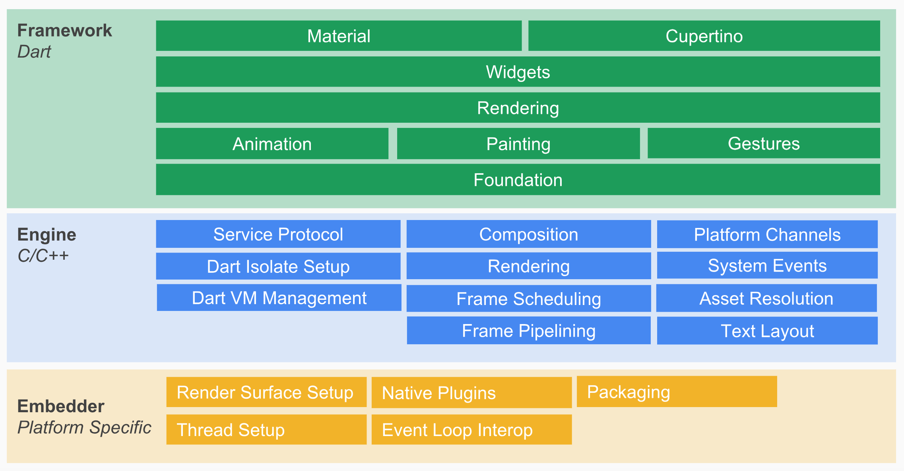
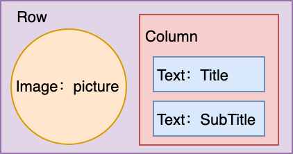
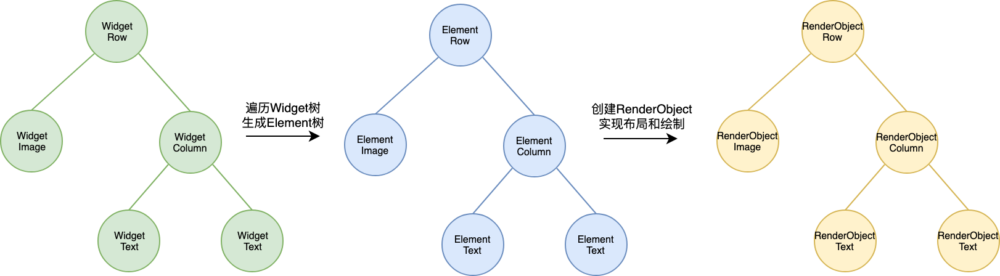

你好，我是陈航。
在前面的 Flutter 开发起步和 Dart 基础模块中，我和你一起学习了 Flutter 框架的整体架构与基本原理，分析了 Flutter 的项目结构和运行机制，并从 Flutter 开发角度介绍了 Dart 语言的基本设计思路，也通过和其他高级语言的类比深入认识了 Dart 的语法特性。
这些内容，是我们接下来系统学习构建 Flutter 应用的基础，可以帮助我们更好地掌握 Flutter 的核心概念和技术。
在第 4 篇文章“Flutter 区别于其他方案的关键技术是什么？”中，我和你分享了一张来自 Flutter 官方的架构图，不难看出 Widget 是整个视图描述的基础。这张架构图很重要，所以我在这里又放了一次。

备注：此图引自Flutter System Overview
那么，Widget 到底是什么呢？
Widget 是 Flutter 功能的抽象描述，是视图的配置信息，同样也是数据的映射，是 Flutter 开发框架中最基本的概念。前端框架中常见的名词，比如视图（View）、视图控制器（View Controller）、活动（Activity）、应用（Application）、布局（Layout）等，在 Flutter 中都是 Widget。
事实上，Flutter 的核心设计思想便是“一切皆 Widget”。所以，我们学习 Flutter，首先得从学会使用 Widget 开始。
那么，在今天的这篇文章中，我会带着你一起学习 Widget 在 Flutter 中的设计思路和基本原理，以帮助你深入理解 Flutter 的视图构建过程。
Widget 渲染过程
在进行 App 开发时，我们往往会关注的一个问题是：如何结构化地组织视图数据，提供给渲染引擎，最终完成界面显示。
通常情况下，不同的 UI 框架中会以不同的方式去处理这一问题，但无一例外地都会用到视图树（View Tree）的概念。而 Flutter 将视图树的概念进行了扩展，把视图数据的组织和渲染抽象为三部分，即 Widget，Element 和 RenderObject。
这三部分之间的关系，如下所示：
Widget
Widget 是 Flutter 世界里对视图的一种结构化描述，你可以把它看作是前端中的“控件”或“组件”。Widget 是控件实现的基本逻辑单位，里面存储的是有关视图渲染的配置信息，包括布局、渲染属性、事件响应信息等。
在页面渲染上，Flutter 将“Simple is best”这一理念做到了极致。为什么这么说呢？Flutter 将 Widget 设计成不可变的，所以当视图渲染的配置信息发生变化时，Flutter 会选择重建 Widget 树的方式进行数据更新，以数据驱动 UI 构建的方式简单高效。
但，这样做的缺点是，因为涉及到大量对象的销毁和重建，所以会对垃圾回收造成压力。不过，Widget 本身并不涉及实际渲染位图，所以它只是一份轻量级的数据结构，重建的成本很低。
另外，由于 Widget 的不可变性，可以以较低成本进行渲染节点复用，因此在一个真实的渲染树中可能存在不同的 Widget 对应同一个渲染节点的情况，这无疑又降低了重建 UI 的成本。
Element
Element 是 Widget 的一个实例化对象，它承载了视图构建的上下文数据，是连接结构化的配置信息到完成最终渲染的桥梁。
Flutter 渲染过程，可以分为这么三步：
- 首先，通过 Widget 树生成对应的 Element 树；
- 然后，创建相应的 RenderObject 并关联到 Element.renderObject 属性上；
- 最后，构建成 RenderObject 树，以完成最终的渲染。
可以看到，Element 同时持有 Widget 和 RenderObject。而无论是 Widget 还是 Element，其实都不负责最后的渲染，只负责发号施令，真正去干活儿的只有 RenderObject。那你可能会问，既然都是发号施令，那为什么需要增加中间的这层 Element 树呢？直接由 Widget 命令 RenderObject 去干活儿不好吗？
答案是，可以，但这样做会极大地增加渲染带来的性能损耗。
因为 Widget 具有不可变性，但 Element 却是可变的。实际上，Element 树这一层将 Widget 树的变化（类似 React 虚拟 DOM diff）做了抽象，可以只将真正需要修改的部分同步到真实的 RenderObject 树中，最大程度降低对真实渲染视图的修改，提高渲染效率，而不是销毁整个渲染视图树重建。
这，就是 Element 树存在的意义。
RenderObject
从其名字，我们就可以很直观地知道，RenderObject 是主要负责实现视图渲染的对象。
在前面的第 4 篇文章“Flutter 区别于其他方案的关键技术是什么？”中，我们提到，Flutter 通过控件树（Widget 树）中的每个控件（Widget）创建不同类型的渲染对象，组成渲染对象树。
而渲染对象树在 Flutter 的展示过程分为四个阶段，即布局、绘制、合成和渲染。 其中，布局和绘制在 RenderObject 中完成，Flutter 采用深度优先机制遍历渲染对象树，确定树中各个对象的位置和尺寸，并把它们绘制到不同的图层上。绘制完毕后，合成和渲染的工作则交给 Skia 搞定。
Flutter 通过引入 Widget、Element 与 RenderObject 这三个概念，把原本从视图数据到视图渲染的复杂构建过程拆分得更简单、直接，在易于集中治理的同时，保证了较高的渲染效率。
RenderObjectWidget 介绍
通过第 5 篇文章“从标准模板入手，体会 Flutter 代码是如何运行在原生系统上的”的介绍，你应该已经知道如何使用 StatelessWidget 和 StatefulWidget 了。
不过，StatelessWidget 和 StatefulWidget 只是用来组装控件的容器，并不负责组件最后的布局和绘制。在 Flutter 中，布局和绘制工作实际上是在 Widget 的另一个子类 RenderObjectWidget 内完成的。
所以，在今天这篇文章的最后，我们再来看一下 RenderObjectWidget 的源码，来看看如何使用 Element 和 RenderObject 完成图形渲染工作。
abstract class RenderObjectWidget extends Widget { @override RenderObjectElement createElement(); @protected RenderObject createRenderObject(BuildContext context); @protected void updateRenderObject(BuildContext context, covariant RenderObject renderObject) { } ...}RenderObjectWidget 是一个抽象类。我们通过源码可以看到，这个类中同时拥有创建 Element、RenderObject，以及更新 RenderObject 的方法。
但实际上，RenderObjectWidget 本身并不负责这些对象的创建与更新。
对于 Element 的创建，Flutter 会在遍历 Widget 树时，调用 createElement 去同步 Widget 自身配置，从而生成对应节点的 Element 对象。而对于 RenderObject 的创建与更新，其实是在 RenderObjectElement 类中完成的。
abstract class RenderObjectElement extends Element { RenderObject _renderObject; @override void mount(Element parent, dynamic newSlot) { super.mount(parent, newSlot); _renderObject = widget.createRenderObject(this); attachRenderObject(newSlot); _dirty = false; } @override void update(covariant RenderObjectWidget newWidget) { super.update(newWidget); widget.updateRenderObject(this, renderObject); _dirty = false; } ...}在 Element 创建完毕后，Flutter 会调用 Element 的 mount 方法。在这个方法里，会完成与之关联的 RenderObject 对象的创建，以及与渲染树的插入工作，插入到渲染树后的 Element 就可以显示到屏幕中了。
如果 Widget 的配置数据发生了改变，那么持有该 Widget 的 Element 节点也会被标记为 dirty。在下一个周期的绘制时，Flutter 就会触发 Element 树的更新，并使用最新的 Widget 数据更新自身以及关联的 RenderObject 对象，接下来便会进入 Layout 和 Paint 的流程。而真正的绘制和布局过程，则完全交由 RenderObject 完成：
abstract class RenderObject extends AbstractNode with DiagnosticableTreeMixin implements HitTestTarget { ... void layout(Constraints constraints, { bool parentUsesSize = false }) {...} void paint(PaintingContext context, Offset offset) { }}布局和绘制完成后，接下来的事情就交给 Skia 了。在 VSync 信号同步时直接从渲染树合成 Bitmap，然后提交给 GPU。这部分内容，我已经在之前的“Flutter 区别于其他方案的关键技术是什么？”中与你介绍过了，这里就不再赘述了。
接下来，我以下面的界面示例为例，与你说明 Widget、Element 与 RenderObject 在渲染过程中的关系。在下面的例子中，一个 Row 容器放置了 4 个子 Widget，左边是 Image，而右边则是一个 Column 容器下排布的两个 Text。

那么，在 Flutter 遍历完 Widget 树，创建了各个子 Widget 对应的 Element 的同时，也创建了与之关联的、负责实际布局和绘制的 RenderObject。

总结
好了，今天关于 Widget 的设计思路和基本原理的介绍，我们就先进行到这里。接下来，我们一起回顾下今天的主要内容吧。
首先，我与你介绍了 Widget 渲染过程，学习了在 Flutter 中视图数据的组织和渲染抽象的三个核心概念，即 Widget、 Element 和 RenderObject。
其中，Widget 是 Flutter 世界里对视图的一种结构化描述，里面存储的是有关视图渲染的配置信息；Element 则是 Widget 的一个实例化对象，将 Widget 树的变化做了抽象，能够做到只将真正需要修改的部分同步到真实的 Render Object 树中，最大程度地优化了从结构化的配置信息到完成最终渲染的过程；而 RenderObject，则负责实现视图的最终呈现，通过布局、绘制完成界面的展示。
最后，在对 Flutter Widget 渲染过程有了一定认识后，我带你阅读了 RenderObjectWidget 的代码，理解 Widget、Element 与 RenderObject 这三个对象之间是如何互相配合，实现图形渲染工作的。
熟悉了 Widget、Element 与 RenderObject 这三个概念，相信你已经对组件的渲染过程有了一个清晰而完整的认识。这样，我们后续再学习常用的组件和布局时，就能够从不同的视角去思考框架设计的合理性了。
不过在日常开发学习中，绝大多数情况下，我们只需要了解各种 Widget 特性及使用方法，而无需关心 Element 及 RenderObject。因为 Flutter 已经帮我们做了大量优化工作，因此我们只需要在上层代码完成各类 Widget 的组装配置，其他的事情完全交给 Flutter 就可以了。
思考题
你是如何理解 Widget、Element 和 RenderObject 这三个概念的？它们之间是一一对应的吗？你能否在 Android/iOS/Web 中找到对应的概念呢？
欢迎你在评论区给我留言分享你的观点，我会在下一篇文章中等待你！感谢你的收听，也欢迎你把这篇文章分享给更多的朋友一起阅读。

COMMUNITY NOTES
读者评论
如果用 Vue 来比喻的话，Widget 就是 Vue 的 template；Element 就是 virtual DOM；RenderObject 就是DOM，不知道这种想法对不？
React：JSX->虚拟DOM->浏览器DOMReact Native：JSX->虚拟DOM->Android/iOS原生控件flutter：Widget->Element（类似虚拟DOM，只是一种数据结构）-> RenderObject 交给底层渲染
flutter渲染原理相关文章看了太多了，但是大部分都是根据图一的flutter架构图重复描述（就好像Android的架构图反复叙述没有意义），刚开始看到这张图的时候以为又是一篇雷同文章，没想到后面的阐述这么清晰生动，让我对flutter的渲染原理有了一个立体的理解，也对flutter更有信心了
listview想要通过代码滑动到某个item有什么办法吗？item的高度都是不固定的
flutter 将Widget设计成不可变，怎么理解？
文中提到的绘制和渲染的区别是什么呢？
Android 里面View 相当于Widget、Window 相当于Element、Surface 相当于RenderObject。
如果 Widget 的配置数据发生了改变，那么持有该 Widget 的 Element 节点也会被标记为 dirty。 widget按照文中所说widget是被element持有，那widget变化了是怎样找到对应的element？widget也持有element？
您好：我看有的文档(flutter in action)会说一个Widget会对应多个Element，因为Element是根据Widget创建的，您的分享里说一个渲染点对应可能对应多个Widget，还是不太理解Widget，Element，RenderObject之间的关系，什么情况下一对一，一对多或多对一，希望能详细讲解一下，谢谢
数据驱动UI构建的话，感觉数据与UI层耦合程度会很高，是不是很难进行重用界面？如果有一个界面几乎一样，但是数据不一样的话是不是要做重复的UI？
widget的渲染成本很低，意思是不是说ListView中类似的Cell可以不用进行重用了？
有一点不理解，在Android中布局叠加嵌套会影响绘制性能，为什么Flutter中叠加不会呢？
一个Widget可以对应多个Element，因为Widget是不可变的配置信息，而一个Element对应一个RenderObject